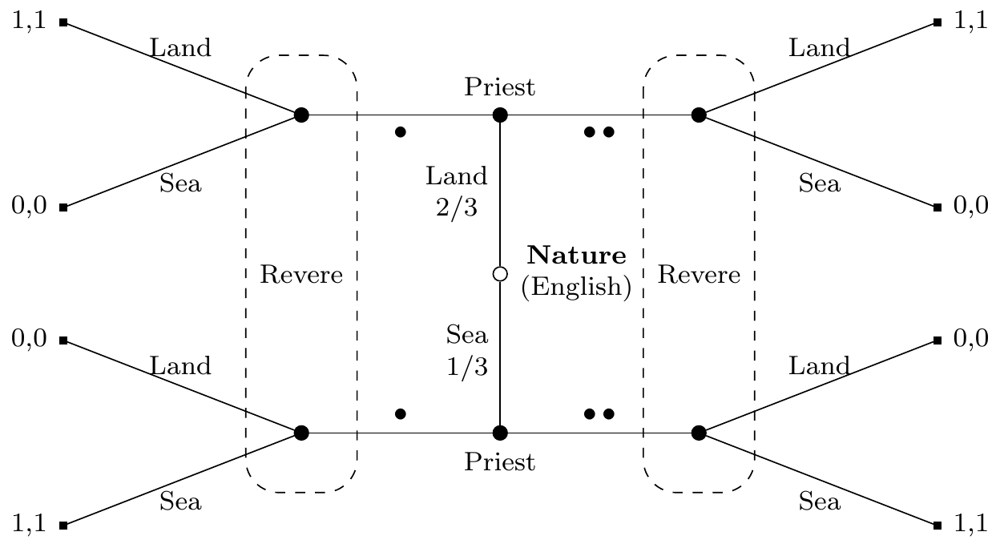

Lemons and Signals
2026-03-23
The Puzzle
A Strange Fact About Cars
Here is something that used to be strikingly true about the used car market throughout most of the twentieth century.
Drive a brand-new car off the dealer’s lot, and it immediately lost something like 20–30% of its value.
Not because anything has gone wrong with it. Not because it’s older. Just because it’s now used.
Houses don’t do this. And the used car market has always been one of the most liquid resale markets around, so it’s not as though buyers are scarce. What was going on?
Your Turn
Before we go further: what do you think explains it?
Take a minute to discuss with the person next to you.
(Collect conjectures from class)
A Note Before We Proceed
This discount was a striking and persistent feature of the used car market throughout most of the 20th century.
It is much less pronounced today, and in some segments it has nearly vanished.
That’s actually part of what makes Akerlof’s model so interesting: it doesn’t just explain the discount, it predicts exactly when the discount should disappear.
We’ll come back to that at the end.
The Obvious Explanations
What Could Cause the Discount?
Here are the most natural explanations people reach for:
- People just prefer new things, so there’s a psychological bias toward novelty.
- The new car smell makes new cars more appealing.
- People don’t want to own something others have already been in.
- Some combination of all of the above.
Why They Don’t Work
These explanations have a common problem: they make predictions we can check, and those predictions fail.
If people simply prefer new things and don’t want others’ cast-offs, why is there no discount on used houses?
Houses are much more intimate than cars. If anything, a lightly used house trades at a small premium, it has established landscaping, known neighbors, a track record.
The “other people have been in it” story predicts a discount on houses. We see the opposite.
Why They Don’t Work
The new car smell story also fails a simple test.
If it were really about the smell, you’d expect a premium on cars that were never test-driven.
We don’t see that. Nobody advertises “never sat in by a stranger” as a selling point that commands a price premium.
Whatever is driving the used car discount, it’s not preference for newness or aversion to other people’s use.
What the Discount Has to Explain
Any good explanation needs to account for:
- Why the discount is large (20–30%, not 2–3%).
- Why it applies to cars specifically and not to other big purchases like houses.
- Why it happened even when the car was sold immediately after purchase.
- Why it has largely vanished in recent decades.
The psychological stories fail on points two and four especially.
Signaling Games
A New Kind of Game
To understand Akerlof’s explanation, we need a new game-theoretic tool.
So far we’ve looked at games where players make decisions simultaneously (PD, Stag Hunt) or sequentially with full information (Ultimatum).
A New Kind of Game
Now we want to model situations where:
- One party has private information the other doesn’t have.
- The informed party moves first.
- The uninformed party observes that move and then acts.
These are called signaling games.
The Three-Part Structure
Every signaling game has three components:
Nature assigns a private type to the Sender. This might be a quality, a characteristic, a hidden fact.
Sender observes their type and chooses a signal to send.
Receiver observes the signal (but not the type) and takes an action. The value of that action depends on Sender’s type.
A Cooperative Example
Paul Revere, 1775.
The British regulars are marching out of Boston. Their route is either by Land (across Boston Neck) or by Sea (across the Charles River).
The sexton at the Old North Church can see the English. He signals to Paul Revere using lanterns: one if by land, two if by sea.
Revere sees the signal, but not the English. He acts: ride north to warn of a land assault, or south for a sea assault.

Figure 1: Paul Revere signaling game
Reading the Tree
We start at the center (open circle): Nature picks the English route.
The solid circles above and below are the Priest’s decision nodes. He knows which route was chosen and picks a signal.
The dashed boxes group nodes that Revere cannot distinguish. He sees the signal (one or two lanterns) but not what’s inside the box.
The square terminal nodes show payoffs: 1,1 if Revere’s response matches the actual route; 0,0 otherwise.
Information Sets
The dashed boxes are called information sets.
An information set is a set of nodes that a player cannot tell apart when it is their turn to act.
Revere’s information sets each contain two nodes: one where the English came by Land, one where they came by Sea. He sees the same signal in both, he just doesn’t know which node he’s actually at.
The signal is Revere’s only evidence about the underlying state.
Equilibrium Types
In a signaling game, we care about what strategies constitute an equilibrium. There are a few patterns:
A separating equilibrium: different types send different signals. Revere can perfectly infer the type from the signal. (This is what one-if-by-land, two-if-by-sea achieves.)
A pooling equilibrium: all types send the same signal. The signal carries no information; Revere learns nothing from it.
There can also be semi-separating equilibria, where types mix probabilistically.
When Interests Diverge
In the Revere game, Priest and Revere have perfectly aligned interests, both want Revere to respond correctly.
But what happens when Sender has a reason to mislead Receiver?
This is where signaling games get interesting, and where they become useful for understanding markets.
An English spy could infiltrate Paul Revere’s network and put out the wrong number of lanterns. Now we have a Sender with different interests from the Receiver.
Akerlof’s Model
The Market as a Signaling Game
George Akerlof’s 1970 paper “The Market for Lemons” showed that used car markets have exactly the structure of a signaling game.
Nature determines the quality of each car, good or bad, when it rolls off the production line. This is unobserved variation: even identical-looking cars can differ substantially in reliability.
Seller (Sender) owns a car, knows its quality from months of ownership, and decides whether to sell.
Buyer (Receiver) sees that the car is for sale and the asking price, but cannot directly observe quality.
The Key Assumptions
Akerlof’s model rests on three stylized facts about the mid-20th century car market:
- There was substantial variation in quality among cars from the same production line. Some were reliable; some were chronic mechanical problems.
- Owners could tell which kind they had after a few months of ownership. Mechanics, breakdowns, and feel reveal a lot.
- Buyers could not tell by inspection or test drive alone. The defects were subtle and cumulative.
The Crucial Observation
If sellers know quality and buyers don’t, then the seller’s decision to sell is itself informative.
Think about it from the buyer’s perspective.
Why would someone sell a perfectly good car?
- Moving and don’t need a car anymore
- Upgrading to something different
- Cash flow problems
- The car is a lemon and they want to get rid of it
The last reason is systematically more likely than random. If you have a bad car, you really want to sell it. If you have a good car, you’re less eager.
The Adverse Selection Logic
Let’s say the market price for used cars is \(X\).
Sellers with good cars compare \(X\) to the value they place on keeping their car. If their car is worth more to them than \(X\), they keep it.
Sellers with bad cars compare \(X\) to their car’s value. Since the car is bad, they are much more likely to find \(X\) attractive.
Result: the pool of cars actually offered for sale is systematically skewed toward lemons.
The Equilibrium
Buyers, being rational, anticipate this.
They know that a car that is for sale is more likely to be a lemon than a car that is not for sale.
So they discount the price they’re willing to pay, substantially.
But this makes it even less attractive for good-car sellers to sell. So even more good cars are withdrawn. The pool gets even worse. Buyers discount even more.
In the extreme case, the market can unravel entirely: only the worst cars get sold, at very low prices.
This Is a Signaling Game
The seller’s act of putting the car on the market is the signal.
It’s not a signal the seller necessarily wants to send, they’d rather buyers thought the car was great.
But in equilibrium, buyers correctly interpret the signal: if it’s for sale, it’s probably a lemon.
This is a pooling equilibrium gone wrong. In the bad equilibrium, all sellers sell (or try to), buyers assume the worst, and only lemons actually trade.
Why Can’t Sellers Just Say “My Car Is Good”?
This is the obvious question. Why can’t a good-car owner just tell buyers the car is fine?
They can, but a bad-car owner would say exactly the same thing.
Talk is cheap. In a game where interests are misaligned, cheap signals carry no information in equilibrium.
For a signal to be credible, it has to be more costly or more valuable for one type to send than for another. We’ll see exactly this logic at work in the Spence model on Wednesday.
When Does the Discount Disappear?
The Model’s Predictions
Akerlof’s model has clear predictions about when the used car discount should shrink or vanish.
The discount exists because of two things working together:
- High variance in quality: enough lemons on the production line to make adverse selection a serious problem
- Asymmetric information: buyers can’t verify quality independently of owning the car
Reduce either one, and the model predicts the discount should fall.
What Actually Happened: Quality
From the 1970s onward, production quality in the car industry improved dramatically.
Japanese manufacturers, particularly Toyota, developed production methods that sharply reduced the variance in quality. Cars became more reliably good.
When there are very few lemons on the production line, the adverse selection problem is much smaller. Even if buyers can’t see quality directly, the prior probability that any given car is a lemon falls.
Less adverse selection → smaller discount.
What Actually Happened: Information
At the same time, the information asymmetry narrowed.
Services like Carfax (launched 1984, widely adopted by the 2000s) give buyers access to a car’s full service and accident history.
Pre-purchase independent inspections became cheap and common.
Certified pre-owned programs from manufacturers give buyers some assurance of quality.
Less information asymmetry → smaller discount.
The Upshot
Both of the conditions that drove the used car discount have weakened substantially over the past forty years.
And the discount has indeed largely vanished. A one-year-old car in excellent condition today typically sells for something close to its new price.
This is strong evidence that Akerlof had the right model. The discount traced back to information and incentives, not smell or snobbery.
The model predicted its own obsolescence, and it was right.
Other Applications
The lemons logic applies far beyond cars:
- Health insurance: people who know they are high-risk are more eager to buy insurance, so the insured pool skews sicker, premiums rise, healthy people opt out, and the pool gets sicker still
- Labor markets: workers know their own productivity; employers don’t, so employers pay average wages, best workers go elsewhere, and average wages fall further
In each case, the same adverse selection logic applies. And in each case, the solutions involve either reducing the information asymmetry or introducing mandatory participation.
For Wednesday
Today we saw that talk is cheap: a seller who says “my car is great” provides no information, because bad sellers would say the same thing.
But sometimes signals can be credible, even in games with misaligned interests.
The trick is to make signals costly in a way that depends on your type. If it’s expensive to send a signal when you’re a low type, but cheap when you’re a high type, then only high types send it.
Wednesday we look at Michael Spence’s model of education as a signal, and ask whether this is a good model of what college actually does.

PHIL 342 | University of Michigan